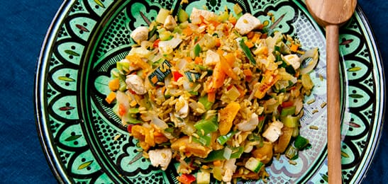

Groentepilaf met kip
Dit is een recept voor een lekkere en gezonde pilaf met groente en kip.
- Soort gerecht: hoofdgerecht
- Aantal personen: 2
- Bereidingstijd: 30+ minuten
Ingrediënten:
- 1 ui
- 150 gram kipfilet
- 2 eetlepels olie
- 2 theelepels kerriepoeder
- 1 theelepel gemberpoeder
- 150 gram zilvervliesrijst
- 400 gram groenteroerbakmix
- 6 gedroogde abrikozen
Bereiding:
- Pel de ui en snijd hem in kleine blokjes.
- Snijd de kipfilet in smalle reepjes.
- Bak de kipfilet enkele minuten in de olie
- Bak de ui met de kerrie en het gemberpoeder mee.
- Voeg de rijst toe en bak de rijst mee tot alle korrels glanzen.
- Voeg 500 ml water toe en breng dit aan de kook.
- Kook de rijst in 10 minuten gaar.
- Schep de groenteroerbakmix er doorheen en kook het gerecht in 5 minuten gaar.
- Snijd of knip de abrikozen in stukjes.
- Meng de gesneden abrikozen door de rijst. Warm dit goed door.